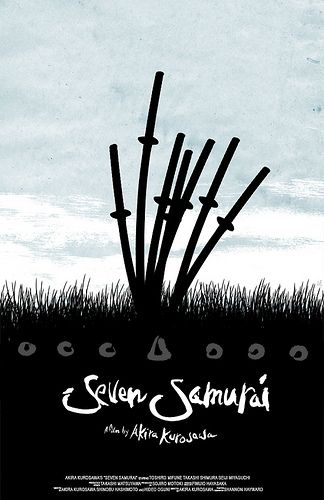

Yedi Samuray, haydutların saldırdığı fakir bir köyü korumaya çalışan samurayların hikayesini anlatıyor. Usta Samurai Kambei’nin cesareti ve fedakarlığına şahit bir grup köylü ondan sürekli olarak haydutlardan köylerini korumasını isterler. Kambei bu isteği herhangi bir çıkarı olmamasına rağmen kabul eder ve ilk olarak kısa süre sonra müridi olan genç samurai Katsushiro’yu, ardından da güç kullanmaya meraklı bir samurai olarak görünen, fakat sonradan bir çiftçinin oğlu olduğu ortaya çıkan Kikuchiyo’yu yanına alır.Takımına dört yeni samurai daha ekleyerek köyü savunmaya girişen Kambei köylüler tarafından heyacanla karşılanır,herkesin sevgisini kazanır; bir süre sonra onlara kendilerini savunmayı öğretmeye başlar. Bu arada haydutlar köyün sınırlarında dolaşmakta ve yeni saldırıları için uygun bir zaman kollamaktadırlar...
Akira Kurosawa’nın kariyerinin doruk noktası olarak görülen Yedi Samuray üç saati geçen uzunluğuna rağmen özellikle zamanında kaliteli örneklerine rastlamanın zor olduğu savaş ve 'aksiyon' sahneleri en dikkatsiz seyircinin bile ilgisini ayakta tutacak pek çok detay içerirken bir yandan da anlattığı hikayenin bütünlüğünden ve sinematografik kaliteden ödün vermeyen bir başyapıt.
